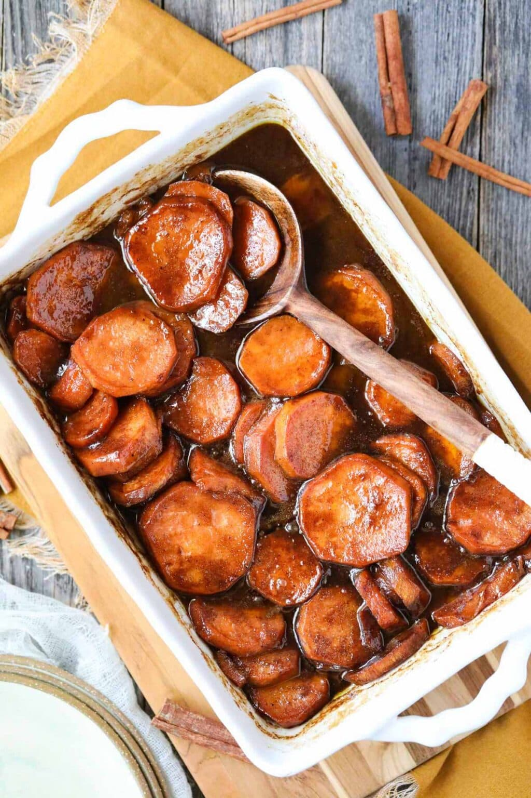

Candied Yams

Description
A rich and flavorful southern-style candied yam recipe made with chopped sweet potatoes cooked in a sweet, buttery syrup until tender and glazed. This is an authentic soul food candied sweet potato recipe that you will find yourself making for every holiday and Sunday dinner!
Ingredients
- Sweet potatoes
- Granulated sugar
- Dark brown sugar
- Unsalted butter
- Cinnamon, ginger, nutmeg, cloves, salt, and vanilla extract
Steps
- Wash, peel, and slice the sweet potatoes into ½-inch thick rounds. Place the sweet potatoes in the baking dish and set them aside.
- Heat the butter, sugars, cinnamon, ginger, nutmeg, cloves, and salt in a medium saucepan over medium-high heat until the butter melts. Stir in the vanilla extract and remove the pan from the heat.
- Pour the butter and sugar mixture over the sweet potatoes and use a wooden spoon or your hands to stir the sweet potatoes and make sure each one is coated in the syrup. Cover the pan with foil and bake the yams in the preheated oven for 30 minutes.
- After 30 minutes, remove the foil from the pan, baste the candied yams with the cooking syrup using a large spoon, and continue cooking the yams, uncovered, for an additional 20 to 25 minutes, or until the sweet potatoes can be easily pierced with a fork and the cooking liquid is syrupy.
- Allow the candied yams to cool for about 10 minutes and enjoy!